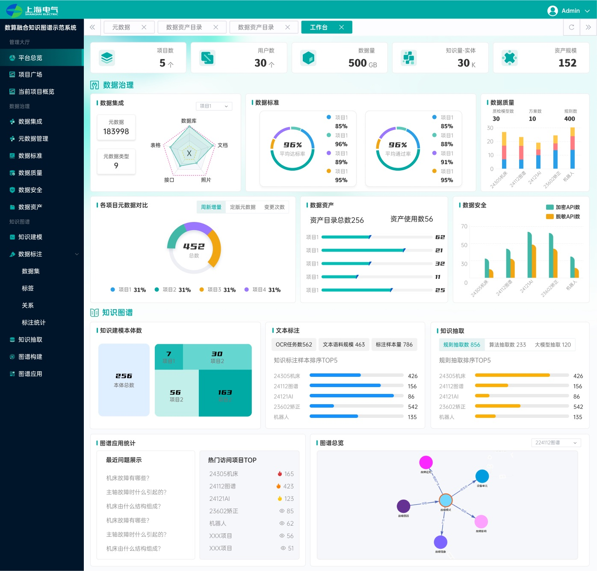

工业智能语义基座（新窗口）
让算法给出结论时，工程师仍看得见证据、留得住判断。
Work / Ongoing Practice
企业里的协作，独立产品里的端到端实践。
这里记录我做了什么、为什么这样做，以及走到了哪里。
让算法给出结论时，工程师仍看得见证据、留得住判断。

连接科研项目的目标、经费与交付。

在相处中留下记忆，慢慢长出自己的表达。
让下一位 AI，接住当前的工作。

让会议里的重要信息，留下来，也找得到。

把一小片鱼塘，放进日常的手心。

把分散的能力，组织成一条可构建的 Agent 路径。

从散落的数据，走到可以理解的业务关系。
Let's Make Something Real
关于 AI 产品、复杂系统，或一次有意思的合作，都欢迎聊聊。